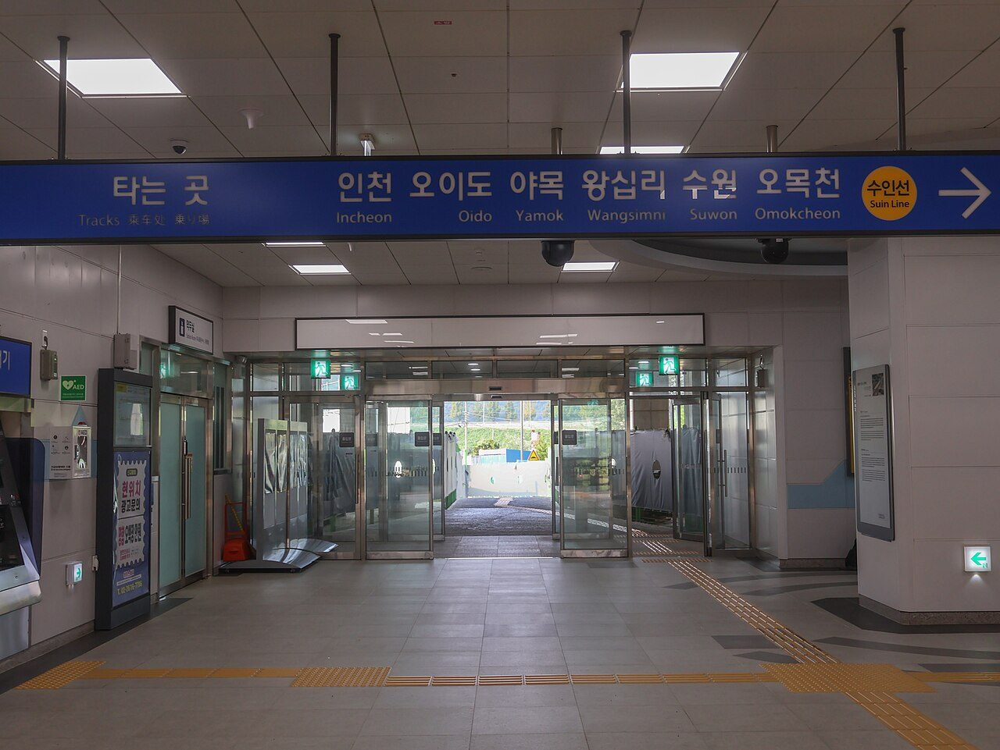
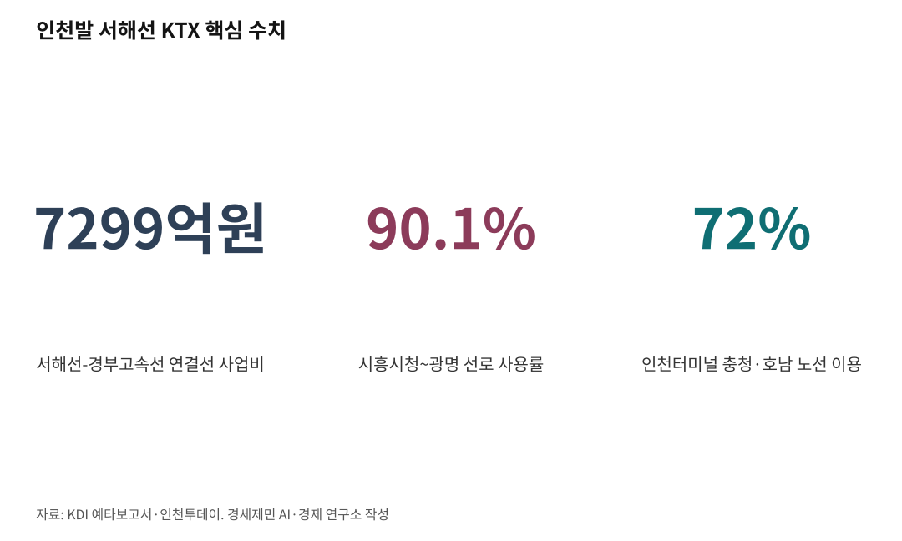

서해안벨트 핵심축 인천발 서해선 KTX①
AI경세제민=김갑봉 기자 | [여객편] 송도에서 익산까지, 서해안 10개 도시를 잇다

인천발 서해선KTX 시흥시청 직결,이재명 서해안벨트와 맞물려
시흥시청역 분기기 하나면 송도~홍성~익산 직결 가능
신안산선 개통 지연으로 설계 변경 적기 열려
인천 송도역에서 서해선을 거쳐 홍성·익산까지 KTX로 직결하는 방안이 시흥시청역 분기기 하나로 실현할 수 있다. 신안산선 개통 시기가 불투명해진 지금이 설계 변경의 적기다.
한국은 철도 정책을 용산 착발 전제로 짜왔다. 인천을 기점으로 놓고 서해안을 바라본 적이 없다. 분기기 하나의 비용으로 인천이 서해안 철도망의 거점이 될 수 있다.
신안산선 개통 지연이 열어준 적기
신안산선은 2025년 4월 개통 예정이었으나 공정 지연이 반복되면서 개통 시기가 불투명해졌다. 2028년 말 이후라는 전망이 나오지만 확정된 것은 아니다. 일부에서는 2030년 이후 개통을 점치기도 한다.
민간투자사업 주관사 포스코이앤씨는 전동차 제작업체 다원시스의 납품 지연을 이유로 2026년 1월 철도차량 공급 계약 해지를 알렸다. 상황은 더 꼬이고 있다.
시흥시청역은 현재 서해선 상대식 2면 2선 구조로 운영 중이다. 경강선 개통에 맞춰 2면 4선 쌍섬식으로 확장 계획을 수립했고 설계·공사를 진행하고 있다. 경강선이 서해선 승강장에 합류하도록 설계했기 때문이다.
핵심은 타이밍이다. 공사가 끝난 뒤 분기기를 추가하려면 재시공이 필요하다. 지금은 확장 설계 자체를 진행하고 있어 남쪽 분기기를 반영할 여지가 있다. 신안산선 개통 지연이 오히려 설계 변경의 시간적 여유를 만들어준 셈이다.

청량리역이 증명한 양방향 운용
인천발 서해선 KTX의 경로는 이렇다. 송도→수인분당선→월곶→경강선→시흥시청역→서해선 남쪽→원시→서화성→홍성→익산이다.
하행(송도→홍성)은 경강선 하행선으로 시흥시청역에 진입한 뒤 서해선 남쪽으로 빠진다. 상행(홍성→송도)은 서해선에서 올라와 시흥시청역 경강선 하행 승강장에 정차한 뒤 역방향으로 월곶까지 간다. 경강선 하행선과 하행 승강장만 양방향으로 쓰는 구조다.
하나의 승강장을 양방향으로 쓸 수 있는가. 청량리역이 답이다.
청량리역은 KTX, ITX-청춘, 경의중앙선, 수인분당선, 경춘선, 무궁화호 등 복수 노선을 신호 제어로 운용한다. 1호선 청량리역에서는 승강장 일부를 상·하행 공용으로 일상적으로 운용한다. 시흥시청역에서 하루 수 회 KTX-이음을 끼워 넣는 것은 청량리역에 비하면 단순한 수준이다.
7299억 연결선 대신 분기기 하나
현재 확정된 서해선 KTX 사업은 서해선-경부고속선 연결선이다. 평택 청북 서해선에서 화성 향남 경부고속선까지 7.35km 연결선을 건설하는 사업으로 총사업비 7299억원, 2031년 개통 목표다. 2025년 1월 예타를 통과했다. 용산 착발 서해선 KTX를 위한 사업이다.
인천발 서해선 KTX는 경부고속선을 경유하지 않는다. 시흥시청역에서 분기기 하나만 추가하면 된다.
경부고속선 선로용량 포화 문제와 무관하고, 시흥시청~광명 구간(서해선-경부고속선 연결선 예타 보고서 기준 사용률 90.1%)도 경유하지 않는다. 통상 분기기·배선 변경 비용은 수십억 단위에 그친다. 7299억원 규모 연결선과는 비용 규모가 전혀 다르다.
두 사업은 대체재가 아니라 보완재다. 용산발과 인천발이 서해선 KTX의 양 날개가 된다.
익산에서 호남 전역으로 뻗는다
인천발 서해선 KTX는 인천에서 화성·평택·아산·당진·홍성·보령·서천·군산을 거쳐 익산까지 서해안 10개 도시를 관통한다. 익산역은 호남선·전라선·장항선이 만나는 철도 분기점이다.
익산 도착 후 두 가지 경로가 열린다. 첫째, 익산역에서 호남선 KTX(정읍·광주송정·목포)나 전라선 KTX(전주·순천·여수)로 환승하는 방안이다. 둘째, 익산삼각선을 경유해 전라선으로 직결하는 방안이다.
2020년 12월 개통한 익산삼각선은 장항선 목천신호소와 전라선 동익산역을 잇는 3.4km 지선으로, 전주·남원·순천·여수까지 직통 운행할 수 있다. 익산역을 건너뛰는 문제가 있어 아직 여객열차는 다니지 않지만, 서해선 KTX 논의에서 검토할 수 있다.
수요 기반은 충분하다. 인천투데이 보도(2022년 4월 14일)에 따르면 인천종합터미널 고속버스 이용객(2011~2021년 누적)의 72%가 충청·호남권 노선을 이용했다.
통계청 인구주택총조사(2021년 기준)에 따르면 인천 인구의 21.1%가 충청(9.8%)과 호남(11.3%) 출생이다. 인천에 고속철도역이 없어 고속버스로 고향을 오가던 수요가 서해선 KTX로 전환할 잠재력이 크다.
이재명 정부 서해안벨트, 2026년이 마지노선
이재명 정부의 5극3특별자치 국토균형발전 구상에서 서해안벨트는 핵심 축이다. 인천~화성~평택~당진~홍성~군산~익산으로 이어지는 서해안 경제벨트를 철도로 연결하는 것은 이 정책 방향과 맞물린다. 인천발 서해선 KTX 직결은 서해안벨트의 철도 인프라를 완성하는 사업이다.
제5차 국가철도망 구축계획을 2026년 전후 수립할 예정이다. 시흥시청역 남쪽 분기기 신설을 이 계획에 반영해야 실현할 수 있다. 경강선 월곶~판교 구간이 2020년대 후반 개통되면 동시에 운행할 수 있다.
한국은 철도 정책을 용산 착발 전제로 짜왔다. 서해선 KTX도 용산 착발이 기본이다. 그러나 인천은 인구 300만의 광역시다.
고속철도역조차 없던 도시가 서해안 철도망의 거점으로 전환할 수 있는 기회가 분기기 하나에 달렸다. 제5차 국가철도망 수립과 경강선 설계 마감 시점을 고려하면 2026년 전후가 정책에 반영할 실질적 마지노선이다. 설계가 굳으면 기회는 사라진다.
참고문헌
· "충남 서해안도 고속철도 시대…'서해선-KTX 직결' 예타 통과", 대전일보, 2025.1.23., https://www.daejonilbo.com/news/articleView.html...
· "서해선 KTX직결선, 예비타당성조사 통과...2032년 개통목표", 철도경제신문, 2025.1.23., https://www.redaily.co.kr/news/articleView.html?idxno=11273
· "서해선·경부고속철도 연결 예타통과 인천발 서해선 KTX 탄력", 인천투데이, 2025.2.1., https://www.incheontoday.com/news/articleView.html...
· "서해선 연장 90km 신설 철도노선 개통…수도권 서부~충남 '1시간'", 뉴시스, 2024.10.31., https://www.newsis.com/view/NISX20241031_0002941962
· "서해선에 ITX-마음 투입, 평택선 경유 '서해 순환열차' 첫선", 철도경제신문, 2024.10.28., https://www.redaily.co.kr/news/articleView.html?idxno=10474
· "버스터미널 승객으로 본 인천 인구, 호남·충남이 압도적", 인천투데이, 2022.4.14.
· "서해선-KTX 연결 추진…충남 교통 확 바뀐다", 한국경제, 2025.2.3., https://www.hankyung.com/article/2025020303311
· "익산역", 위키백과, https://ko.wikipedia.org/wiki/익산역
· "서해선~경부고속선 연결선 예비타당성조사 보고서", KDI 공공투자관리센터, 2025.1.
사진 출처
· [대표사진] LandAndTree, "Hwaseong City Eocheon Station Suin-Bundang Line Incheon Direction Tracks 20240803.jpg", 위키미디어 공용, CC0, https://commons.wikimedia.org/wiki/File:Hwaseong_City_Eocheon_Station_Suin-Bundang_Line_Incheon_Direction_Tracks_20240803.jpg
※ 이 기사는 인공지능을 활용해 작성했습니다.
관련기사
저작권자 © AI경세제민 무단전재 및 재배포, AI학습 및 활용 금지